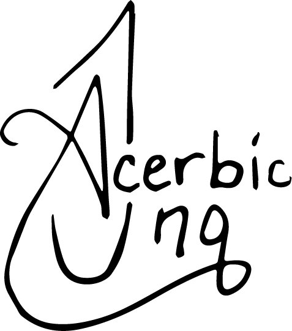

Web Dev Projects


1 Prepared Mac by cleaning up and moving files to both external and cloud storage. 2 Flashed Debian OS onto flash drive. 3 Attempted to install. 4 Realized reliable WPS wifi or LAN was needed for proper install. 5 Aborted. 6 Flashed Kubuntu OS onto flash drive instead. 7 Successfully installed!
In Progress
Goal: Customize Kindle for use as Manga Reader, RSS Feed, etc, expanding functionality beyond Kindle books alone.
1. Followed Jailbreak guide successfully.
2. Next step is to input desired apps into Kual to expand Kindle functionality.
Goal: Turn my Harborinno Paper 7 Tablet into an RLCD Dispay that can be used with Kconnect or similar in Kubuntu; to reduce eye strain during the daytime.
Goal: To restore or enhance original battery life of 2012 Macbook Air.
Goal: Turn old 2012 iPad into a Linux Machine.
Seasoned professional soon to be honorably discharged from the Air Force. Actively pursuing an B.S. in IT through the Accelerated BS to MS IT Program at Western Governor’s University (WGU). A self-starter with experience applying robust system solutions in IT-focused settings.
MS Office | SharePoint | Google Surveys | Presentation Design (PPT & Canva) | Process Improvement | Adept Skills Acquisition
Download Helpdesk ResumeA collection of all my work experience since 2007.
This is what I pull from when I create any custom resume.
Download Master ResumeHey there. I'm Chelsea Irish.
When Covid hit in 2020, I, like many others, started using that extra time to dabble in web development. I learned the basics: HTML,CSS and JavaScript. At first, I used tutorials and Free Code Camp, but quickly found myself wanting more creative freedom. I was learning to code because I wanted to build things for me. So I dropped the tutorials and started doing just that!
But then, I quickly learned just how much I didn't know. The pursuit quickly became overwhelming for me, and I took the advice of fellow web devs...
Use AI to help you learn.
Ok, so I tried that for quite some time. It certainly seemed to help at first; however, my baby (meaning my wain project, acerbicinq.com, Lol.)quickly became bloated and too unwieldy for a beginner like me. Yet there was just too much sunken cost, so I finished the website the best I could. I kept losing motivation because the way the website was working was never quite what I wanted. Everything was always either a little, or way off. There were some other IT-based projects I'd work on instead, such as turning my old Macbook Air into a Linux machine (which I am using right now to code this website and write this about me), and repurposing old hardware I have laying around.
In addition, my obsession with DIY explains the sheer variety of my hobbies: music production, podcasting, writing, sewing/crochet, choreography... I can't seem to not make things for myself! Well I realized why I'd been avoiding and procrastinating on my website for so long (besides having a day job and a ton of hobbies). I needed to do it the DIY way.
So now I'm starting from scratch. I'm keeping my AI-assisted website up, which you can see in my web projects above. But I decided, since there's so much I need to learn, I will enroll myself into an IT program at WGU. Just for my hobby? Yes, for my hobby. I am that kind of person that does those things. Don't ask me how much I've spent on music production classes or sewing classes, either. This is me, haha. I figured I may very well attempt to get employment in IT to complement my studies, but since everything I've done is self-taught, I'm not sure how I measure up. Perhaps I'll need more time and mentorship.
Nevertheless, I'm putting my best foot forward.
*Obsessed about the Indieweb* | *The Good Internet* | *The Small Web*